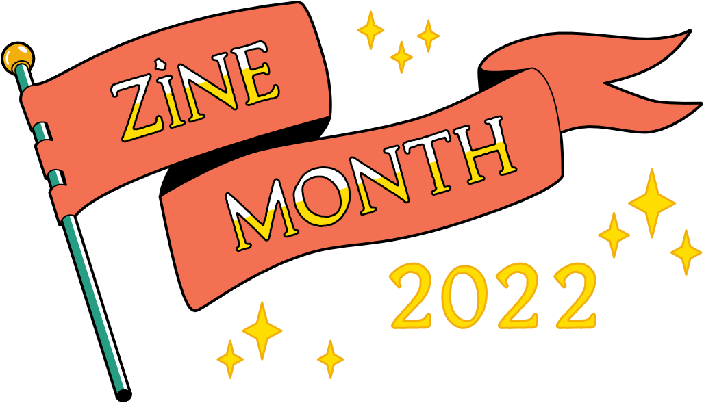
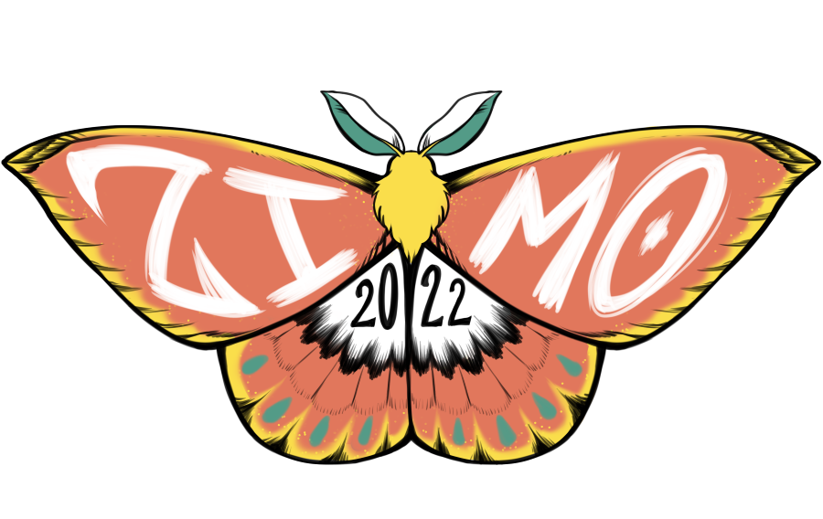

Zine Month (or ZIMO) is the indie TTRPG community`s response to: What if we cultivated our own systems of support?
Feral Indie Studios has strived to organize a new community driven event that lowers the barrier of entry for participation. With regular workshops given by different designers, games using a multitude of funding avenues are given a chance to participate on equal footing using the ZIMO website.
It is inspiring to see how the indie TTRPG scene can band together to try to build our own means of supporting each other. It shows what a coming together can achieve, and is a sign of great things to come.
Nick Erickson, of Goblin Archives
Zine Month, or ZIMO for short, is a community-driven event focused on creating, collaborating on, and funding TTRPG zines through the month of February.
Started as an alternative to ZineQuest, ZIMO has grown to include a community of supporters, creator workshops, and an archive of collected information and resources to assist fledgling or experienced creators alike.
Recently, kickstarter has made the shift to blockchain technology. While this does not explicitly mean that they are diverting to crypto-currency, it is wise to infer that this is a move in that general direction. As Kickstarter is the hub and funding platform of the event known as ZineQuest, that throws creators and supporters in a loop about whether or not to continue to use the service. The hope is that this provides creators with other options and opportunities.
Zinequest has not been available to a majority of international creators due to the self-imposed geographical limits of KS. The indie TTRPG community is a global one and everyone should have a fair opportunity to have their ideas and creations shared. The hope is that those who are making zines or want to make zines will have a footing that Kickstarter has neglected to provide.
De-monopolizing how projects are funded and spreading awareness of where projects can be found and financed will create a healthier community. The TTRPG community has always been a vast and inclusive space and it is important that it continues to be so. Reliance on a single funding site jeopardizes what projects receive spotlight and inevitably what creators receive funding.
Education: provide information about where creators can host their zine, from pre-order sites, digital distributors, or crowdfunding platforms. First-time creators will have information on the pros and cons of various platforms while seasoned creators will be presented with options outside of the norm. As well, information on printing options both large and small will be shown alongside examples of cooperative creator/distributor agreements for folks to utilize. Those looking to create a project as a part of a mutually beneficial co-op will have a couple of starting points and resources at their disposal.
De-Monopolization: Creating additional avenues of how projects are funded and spreading awareness of where projects can be found and financed will create a healthier community. The TTRPG community has always been a vast and inclusive space and it is important that it continues to be so. Reliance on a single funding site jeopardizes what projects receive spotlight and inevitably what creators receive funding.
Democratization: The indie TTRPG community is a global one and everyone should have a fair opportunity to have their ideas and creations shared, not just the financially successful ones. The hope is that those who are making zines or want to make zines will have an equal footing alongside everyone else.
Zine Month Featured on Dicebreaker
Mailing List Briefings and Initial Planning
Questions and concerns regarding Zine Month can be directed to feralindiestudio@gmail.com
There is also a growing and active community on Discord; featuring channels for workshops, art, collaboration and promotion.
